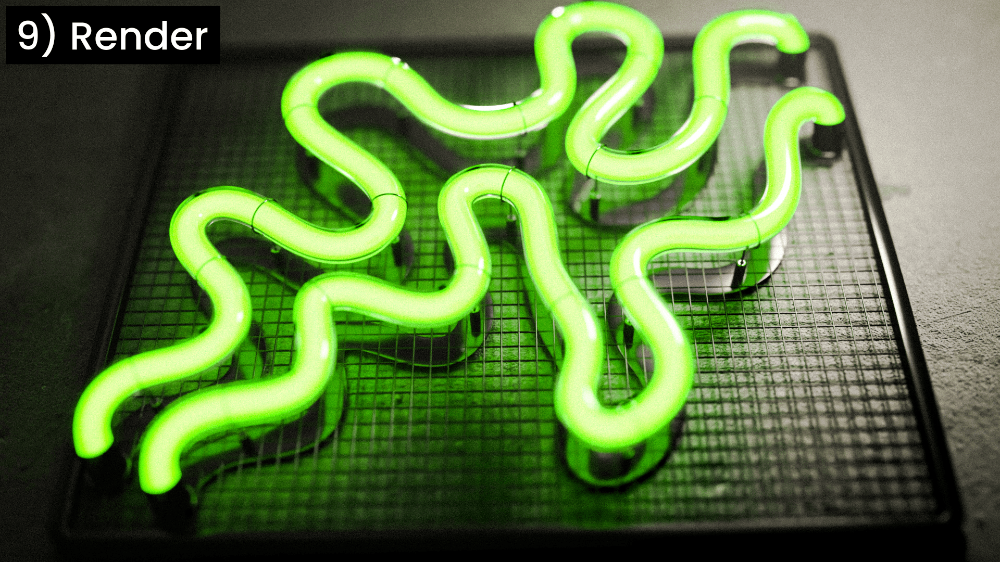
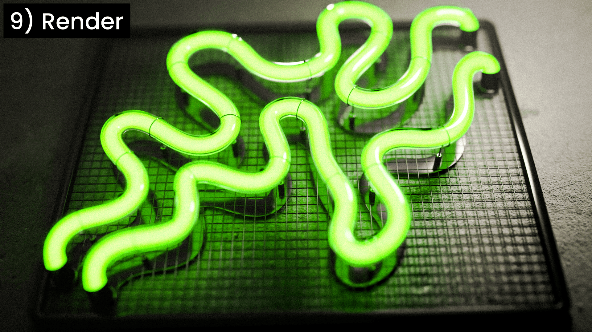

Instant Neon
Instant Neon är ett verktyg för 3D-designers som snabbt vill kunna förvandla vektorgrafik till realistiska modeller av neonskyltar i Blender.
Idén
Neonskyltar används ofta för att skapa atmosfäriska stadsmiljöer i 3D. En neonskylt kan se ut på oändligt många sätt, men processen för att modellera den är i princip densamma oavsett form. Jag såg en möjlighet att automatisera denna process genom att skapa ett verktyg med Geometry Nodes i Blender.
Processen
Det första steget var att identifiera vilka funktioner som är relevanta. Vilka parametrar bör kunna justeras för att medge hög anpassningsbarhet utan att överväldiga användaren? Några exempel är glasrörets diameter, ljusets färg och antalet väggfästen.
När relevanta parametrar fastställts byggdes ett system av Geometry Nodes och Shader Nodes i Blender. Denna process stod för majoriteten av projektets utvecklingstid.
Resultatet
Resultatet blev ett verktyg som låter användaren importera en vektorfil och automatiskt förvandla den till en 3D-modell av en neonskylt med samma motiv. Produkten lanserades för 10 USD och har sålts till drygt 360 kunder, med ett snittbetyg på 4 av 5 stjärnor.
 

Lärdomar
Till produkten medföljer en videoguide som förklarar hur verktyget används. Ett av stegen i guiden visas dock lite för fort, vilket gjort att vissa användare missat det och tolkat det som att produkten inte fungerar. Med en tydligare instruktion hade detta kunnat undvikas.